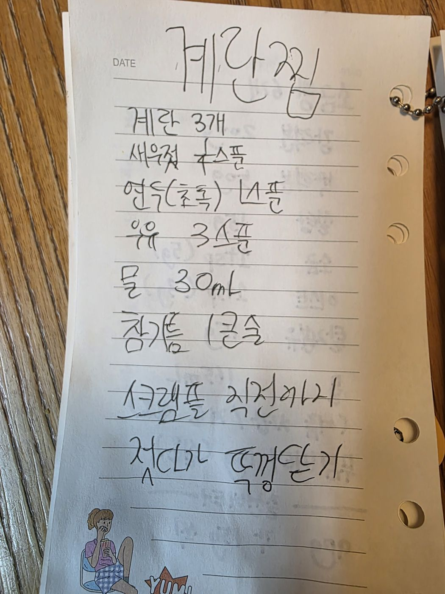

← 전체 레시피
기타
🥚 계란찜
손으로 적은 노트를 그대로 옮긴 레시피입니다.
분량
2~3인분
굽기
가스레인지 · 뚜껑 덮고 익히기
📷 원본 노트 사진 보기
재료
재료
계란 3개
새우젓 1스푼
연두(초록) 1스푼
우유 3스푼
물 30mL
참기름 1큰술
만드는 법
계란을 풀고 새우젓·연두·우유·물·참기름을 섞는다.
불에 올려 스크램블 직전까지 계속 젓는다.
뚜껑을 덮고 약불에서 부풀 때까지 익힌다.

원본 노트 사진 — 탭하면 크게 볼 수 있어요